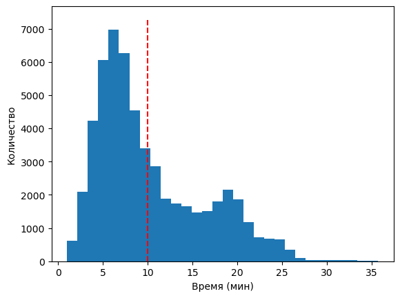
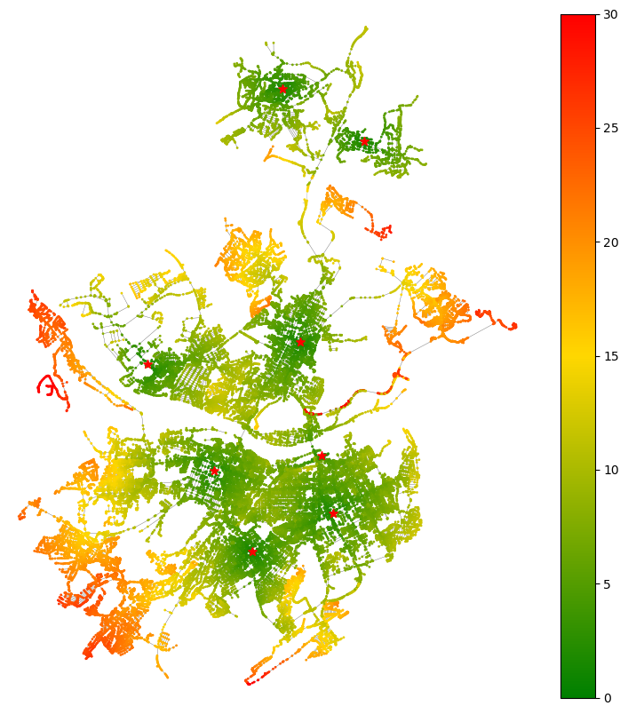
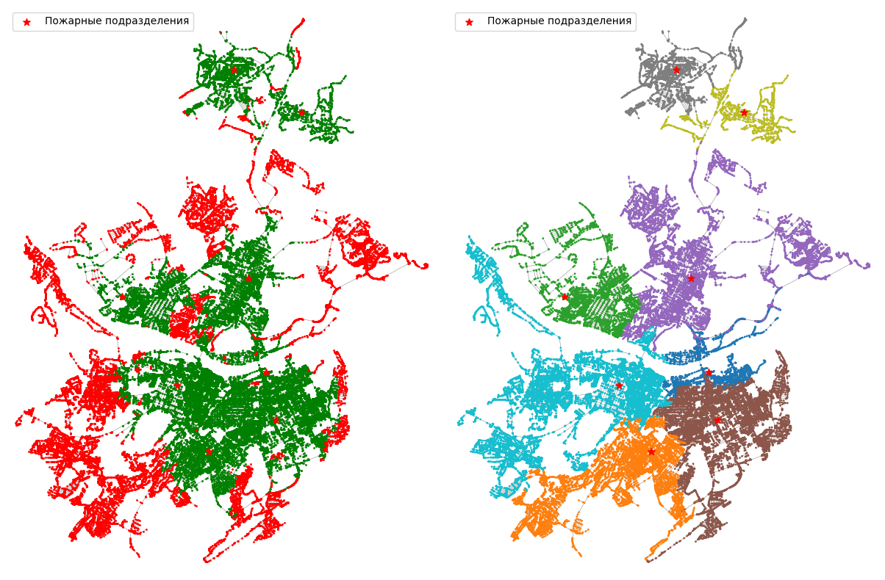
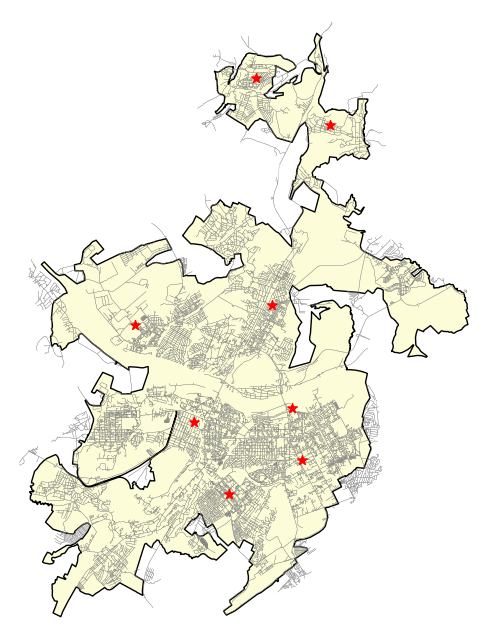
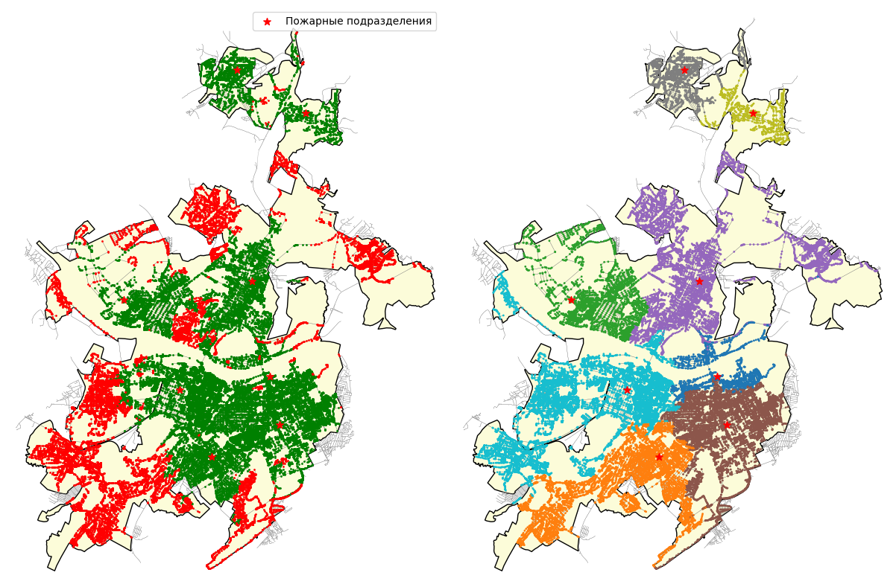
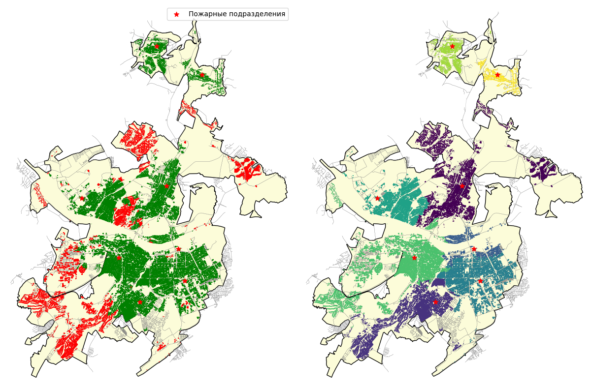
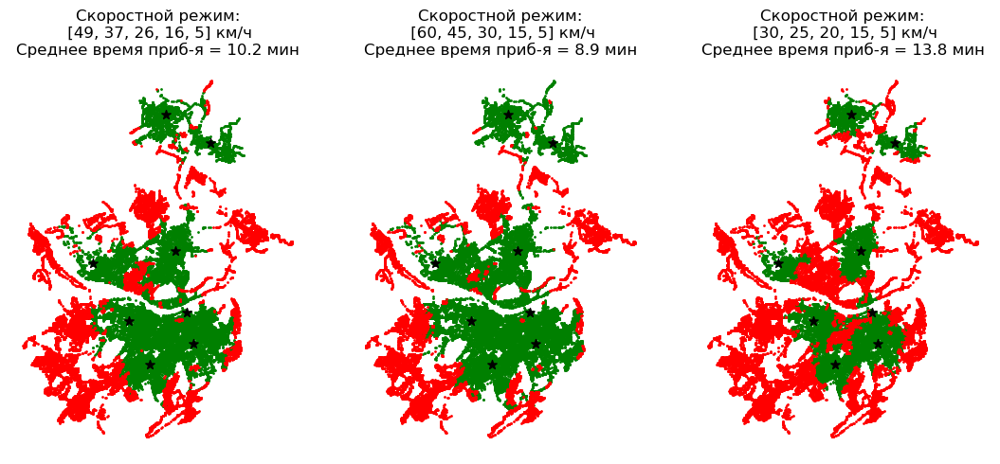
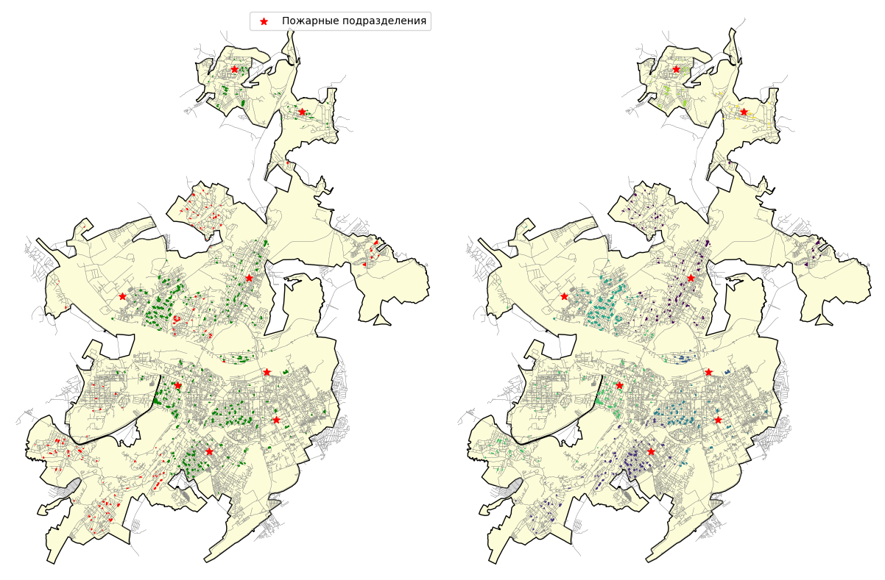

flowchart LR
state["**ФУНКЦИЯ МОДЕЛИРОВАНИЯ**"]
source["**ИСХОДНЫЕ ДАННЫЕ**"]
algs["**РАСЧЕТНЫЕ АЛГОРИТМЫ**
---
Кратчайший путь
---
Модель оценки t_сл"]
model("**МОДЕЛИРОВАНИЕ
ПАРАМЕТРОВ
ПРИБЫТИЯ**")
result["**РЕЗУЛЬТАТЫ**"]
algs --> state
state --> model
source --> model
model --> result
7 Моделирование параметров прибытия подразделений пожарной охраны
7.1 Общие сведения
Моделирование параметров прибытия подразделений пожарной охраны - одна из основных частей работы с библиотекой Генезис, в которой при помощи расчетных алгоритмов и с использованием исходных данных происходит моделирование параметров прибытия подразделений пожарной охраны.
Результатом моделирования является текущее состояние параметров прибытия пожарных подразделений - времена прибытия первого подразделения пожарной охраны во все узлы ГДС и идентификатор первого прибывающего подразделения пожарной охраны.
В наиболее общем виде структуру моделирования можно представить следующим образом:
При конструировании решения пользователю, исходя из поставленной задачи расчета, необходимо:
- Выбрать функцию моделирования
- Указать используемые функцией моделирования (как правило достаточно установленных по умолчанию):
- алгоритм расчета кратчайшего пути
- алгоритм расчета времени следования ПА
- Выбрать исходные данные которые следует использовать:
- ГДС (всегда)
- дислокация ПСЧ
- расчетная область
- скоростной режим (всегда)
Алгоритмы моделирования
В Генезис реализованы следующие алгоритмы:
genesis.states.FirstArrivalUnitState: алгоритм расчета на основе определения времени прибытия от каждой указанной ПСЧ до каждого из узлов ГДС по кратчайшему маршруту (прямая задача)genesis.states.ArrivalTimeMatrixState: алгоритм расчета на основе заранее рассчитанной матрицы прибытия к каждому из узлов ГДС (обратная задача)
7.2 Примеры использования
Загрузка основных библиотек
import random
import numpy as np
import osmnx as ox
import pandas as pd
import geopandas as gpd
import matplotlib.pyplot as plt
import genesis as genesis
# Версии библиотек
print('OSMnx:', ox.__version__,
'\nGeoPandas:', gpd.__version__,
'\nPandas:', pd.__version__,
'\ngenesis:', genesis.__version__,
)OSMnx: 2.0.1
GeoPandas: 1.0.1
Pandas: 2.2.2
genesis: 0.1.035Загрузка исходных данных
from genesis.states import FirstArrivalUnitState
from graphs.speeds import set_graph_travel_times, kmh_to_mm
from fire_units.settings import DEFAULT_SPEEDS
# 1. Загрузка исходных данных
## Загрузка ГДС
G = ox.load_graphml('data/kemerovo/gds.ml')
## Загрузка пожарных подразделений
units = gpd.read_file('data/kemerovo/fire_units.gpkg')
### Сопоставление пожарных подразделений с ближайшими узлами ГДС
units['node'] = ox.distance.nearest_nodes(G, units.geometry.x, units.geometry.y)
### Формирование словаря подразделений для передачи алгоритму
units_dict = {k:v for k,v in zip(units['node'], units['name'])}
## Загрузка зданий
buildings = gpd.read_file('data/kemerovo/buildings.gpkg')
### Сопоставление зданий с ближайшими узлами ГДС
### Для полигональных объектов следует использовать центроиды: `geometry.centroid`
### Наборы данных желательно перепроецировать в локальную СК
centroids = ox.projection.project_gdf(buildings).geometry.centroid
buildings['node'] = ox.distance.nearest_nodes(ox.project_graph(G),
centroids.x,
centroids.y
)
## Загрузка границ населенного пункта
borders = gpd.read_file('data/kemerovo/borders.gpkg')
## Установка скоростного режима ГДС
set_graph_travel_times(
G,
speeds=DEFAULT_SPEEDS,
morph_function = kmh_to_mm)Пример 1: Моделирование параметров прибытия во все узлы графа
Задача: Определить параметры прибытия подразделений пожарной охраны во все узлы ГДС
from genesis.states import FirstArrivalUnitState
# 2. Сборка решения
## Выбор алгоритма моделирования
## (алгоритмы расчета расчета кратчайшего пути
## и времени следования установлены по умолчанию)
state = FirstArrivalUnitState()
# 3. Моделирование параметров прибытия
times, nearest = state(env=G, points=units_dict)
# Печать случайных 3 результатов по временам прибытия и ближайшим подразделениям
nodes = random.choices(times.keys(), k=3)
times[nodes], nearest[nodes](5529102501 10.288731
2039713005 21.145816
5120237832 7.832217
Name: times, dtype: float64,
5529102501 4 ПСЧ 1 ПСО ФПС ГПС ГУ МЧС России по Кемеровск...
2039713005 2 ПСЧ 1 ПСО ФПС ГПС ГУ МЧС России по Кемеровс...
5120237832 1 ПСЧ 1 ПСО ФПС ГПС ГУ МЧС России по Кемеровск...
Name: nearest, dtype: object)times – данные о временах прибытия первого подразделения пожарной охраны в каждый из узлов ГДС
nearest – идентификатор первого прибывающего подразделения
Ключ, словаря - это идентификатор узла ГДС, значение - время прибытия первого подразделения и его идентификатор для times и nearest, соответственно. Таким образом 1025675392 11.725953, означает что в узел 1025675392 первое подразделение прибудет через 6,5 минут. А запись (1025675392, "3 ПСЧ 1 ПСО ФПС ГПС ГУ МЧС России по Кемеровск...") означает, что первым подразделением будет 3 ПСЧ 1 ПСО ФПС ГПС ГУ МЧС России по Кемеровск...
Важно
На практике не всегда все узлы ГДС достижимы, поэтому количество times и nearest может быть меньше чем количество узлов графа
Взглянуть на некоторые характеристики полученного распределения времен прибытия можно воспользовавшись describe()
times.describe()count 54915.000000
mean 10.248943
std 5.993978
min 1.000000
25% 5.752797
50% 8.213621
75% 14.116574
max 35.690362
Name: times, dtype: float64Видно, что среднее время прибытия первого пожарного подразделения составляет 10,2 мин, максимальное - 35,6 мин.
Графически оценить распределение времен прибытия можно построив гистограмму распределения.
ax = times.plot(kind='hist', bins=30)
ax.set_xlabel('Время (мин)')
ax.set_ylabel('Количество')
ax.vlines(10, 0, ax.get_ylim()[1], colors='red', linestyles='dashed')
plt.show()
Можно также оценить долю значений, время прибытия которых превышает 10 и 20 минут (ИП-10 и ИП-20)
print('ИП-10:', 100 * sum(times<=10) / len(times))
print('ИП-10:', 100 * sum(times<=20) / len(times))ИП-10: 60.92142401893836
ИП-10: 91.04069926249659Наконец, очевидный интерес представляет визуализация времен прибытия и первого прибывшего подразделения пожарной охраны на карте населенного пункта.
from genesis.swiss_knife import CMAP_GrGldRd # Цветовая карта Зеленый-Красный
# Получение набора геоданных узлов ГДС
g_nodes = ox.graph_to_gdfs(G, edges=False)
# Дополняем геоданные результатами моделирования
g_nodes = g_nodes.merge(times, left_index=True, right_index=True)
g_nodes = g_nodes.merge(nearest, left_index=True, right_index=True)
# Печатаем узлы как градиент
fig, ax = plt.subplots(figsize=(10,10))
ox.plot_graph(G, node_size=0, edge_linewidth=0.2, edge_color='gray', ax=ax, close=False, show=False)
g_nodes.plot(column='times', ax=ax, cmap=CMAP_GrGldRd, markersize=1, vmin=0, vmax=30, label='Время прибытия', legend=True)
units.plot(ax=ax, color='red', markersize=50, marker='*', label='Пожарные подразделения')
plt.show()
Однако интереснее было бы взглянуть на зоны прикрытые подразделениями пожарной охраны и зоны обслуживания ПСЧ
# Подготовка холста для 2 карт
fig, (ax1, ax2) = plt.subplots(1, 2, figsize=(16,8), tight_layout=True)
# Карта 10 минутной зоны
ox.plot_graph(G, node_size=0, edge_linewidth=0.2, edge_color='gray', ax=ax1, close=False, show=False)
g_nodes[g_nodes['times']<=10].plot(ax=ax1, markersize=1, color='g')
g_nodes[g_nodes['times']>10].plot(ax=ax1, markersize=1, color='r')
units.plot(ax=ax1, color='red', markersize=50, marker='*', label='Пожарные подразделения')
ax1.legend()
# Карта зон обслуживания
ox.plot_graph(G, node_size=0, edge_linewidth=0.2, edge_color='gray', ax=ax2, close=False, show=False)
g_nodes.plot(ax=ax2, column='nearest', markersize=1)
units.plot(ax=ax2, color='red', markersize=50, marker='*', label='Пожарные подразделения')
ax2.legend()
plt.show()
Боле подробно о способах визуализации карт при помощи Python можно прочитать в разделе “Для разработчиков”.
Пример 2: Моделирование в пределах некоторой области
Зачастую возникает ситуация когда требуется произвести расчет для некоторого населенного пункта и при этом необходимо учитывать возможность следования ПА за пределами населенного пункта. В такой ситуации нельзя учитывать узлы ГДС расположенные за пределами границ населенного пункта.
В этом случае необходимо указывать дополнительно маску узлов ГДС, которые следует учитывать в расчетах.
# Печать ГДС и границ населенного пункта
fig, ax = plt.subplots(figsize=(8,8))
borders.plot(ax=ax, color='#fcfcd9', edgecolor='black')
ox.plot_graph(G, node_size=0, edge_linewidth=0.2, edge_color='gray', ax=ax, close=False, show=False)
units.plot(ax=ax, color='red', markersize=50, marker='*', label='Пожарные подразделения')
plt.show()
Видно, что в данном случае часть ГДС находится за пределами границ населенного пункта и учитывать их в качестве возможных мест возникновения пожара тоже не требуется.
В этом случае моделирование выполняется только для узлов расположенных в пределах населенного пункта:
# Получение маски узлов графа (потенциальных мест возникновения пожара)
nodes_mask = g_nodes.within(borders.union_all())
# 3. Моделирование параметров прибытия
times, nearest = state(env=G, points=units_dict, area=nodes_mask)
times.describe()count 48675.000000
mean 9.588211
std 5.566273
min 1.000000
25% 5.521719
50% 7.687040
75% 12.798064
max 33.472722
Name: times, dtype: float64Видно, что размер times = 48675, в то время, как ранее размер результатов моделирования составлял 54915.
При этом теперь среднее время прибытия составляет 9,6 минут, против 10,2 минут ранее.
Взглянем как теперь выглядит карта населенного пункта:
# Получение набора геоданных узлов ГДС
g_nodes = ox.graph_to_gdfs(G, edges=False)
# Дополняем геоданные результатами моделирования
g_nodes = g_nodes.merge(times, left_index=True, right_index=True)
g_nodes = g_nodes.merge(nearest, left_index=True, right_index=True)
# Подготовка холста для 2 карт
fig, (ax1, ax2) = plt.subplots(1, 2, figsize=(16,8), tight_layout=True)
# Карта 10 минутной зоны
borders.plot(ax=ax1, color='#fcfcd9', edgecolor='black')
ox.plot_graph(G, node_size=0, edge_linewidth=0.2, edge_color='gray', ax=ax1, close=False, show=False)
g_nodes[g_nodes['times']<=10].plot(ax=ax1, markersize=1, color='g')
g_nodes[g_nodes['times']>10].plot(ax=ax1, markersize=1, color='r')
units.plot(ax=ax1, color='red', markersize=50, marker='*', label='Пожарные подразделения')
ax1.legend()
# Карта зон обслуживания
borders.plot(ax=ax2, color='#fcfcd9', edgecolor='black')
ox.plot_graph(G, node_size=0, edge_linewidth=0.2, edge_color='gray', ax=ax2, close=False, show=False)
g_nodes.plot(ax=ax2, column='nearest', markersize=1)
units.plot(ax=ax2, color='red', markersize=50, marker='*', label='Пожарные подразделения')
plt.show()
Можно заметить, что узлы ГДС выходящие за пределы границ населенного пункта на карте теперь не отмечены.
Пример 3: Моделирование параметров прибытия к зданиям
Реализованные в Генезис функции моделирования ориентированы на расчет времени прибытия к узлам ГДС. Предполагается, что дальнейший анализ будет выполняться либо инструментами анализа, либо внутренней логикой эвристических алгоритмов, либо пользователем.
Поэтому напрямую указать функциям моделирования здания в качестве цели нельзя.
Для моделирования параметров прибытия именно к зданиям населенного пункта, следует объединить набор пространственных данных о зданиях с результатами моделирования, аналогично тому, как выше происходило объединение с данными узлах ГДС.
from genesis.states import FirstArrivalUnitState
# 2. Сборка решения
## Выбор алгоритма моделирования
## (алгоритмы расчета расчета кратчайшего пути
## и времени следования установлены по умолчанию)
state = FirstArrivalUnitState()
# 3. Моделирование параметров прибытия
times, nearest = state(env=G, points=units_dict)
# 4. Анализ результатов
# Дополнение данных о зданиях данными результатами моделирования (по полю `node`)
buildings_s = buildings.copy()
buildings_s = buildings_s.merge(times, left_on='node', right_index=True)
buildings_s = buildings_s.merge(nearest, left_on='node', right_index=True)
print('Результатов моделирования:', len(times))
print('Количество зданий:', len(buildings_s))Результатов моделирования: 54915
Количество зданий: 37529## Определение цветов зданий (требуется для лучшей читаемости при печати полигонов):
clrs = {k:v for k,v in zip(units['name'], ox.plot.get_colors(n=len(units)))}
bld_clrs = [clrs[n] for n in buildings_s['nearest']]
# Подготовка холста для 2 карт
fig, (ax1, ax2) = plt.subplots(1, 2, figsize=(16,8), tight_layout=True)
# Карта 10 минутной зоны
borders.plot(ax=ax1, color='#fcfcd9', edgecolor='black')
ox.plot_graph(G, node_size=0, edge_linewidth=0.2, edge_color='gray', ax=ax1, close=False, show=False)
buildings_s[buildings_s['times']<=10].plot(ax=ax1, color='g', edgecolor='g')
buildings_s[buildings_s['times']>10].plot(ax=ax1, color='r', edgecolor='r')
units.plot(ax=ax1, color='red', markersize=50, marker='*', label='Пожарные подразделения')
ax1.legend()
# Карта зон обслуживания
borders.plot(ax=ax2, color='#fcfcd9', edgecolor='black')
ox.plot_graph(G, node_size=0, edge_linewidth=0.2, edge_color='gray', ax=ax2, close=False, show=False)
buildings_s.plot(ax=ax2, facecolor=bld_clrs, edgecolor=bld_clrs)
units.plot(ax=ax2, color='red', markersize=50, marker='*', label='Пожарные подразделения')
plt.show()
Пример 4: Настройки скоростного режима
Стандартный подход к настройке скоростного режима подразумевает разделение всех типов дорог на 5 классов:
Список скоростей для 5 классов дорог:
- Магистральные городские дороги и улицы общегородского значения
- Магистральные улицы районного значения
- Улицы и дороги местного значения
- Служебные проезды: внутриквартальные, въездные, парковочные и т.д.
- Пешеходные зоны и территории не являющиеся проезжей частью, но теоретически пригодные для передвижения пожарных автомобилей
Для их установки используется функция set_graph_travel_times().
Важно
Единицы измерения для подачи в set_graph_travel_times - [м/мин]. Стандартные же скорости указаны в [км/ч]. Поэтому необходимо выполнять преобразование единиц измерения [км/ч] -> [м/мин]!
Наиболее общий пример - использовать скорости по умолчанию (из graphs.settings.DEFAULT_SPEEDS).
speeds = [kmh_to_mm(s) for s in DEFAULT_SPEEDS]
set_graph_travel_times(G, speeds)или:
set_graph_travel_times(G, DEFAULT_SPEEDS, kmh_to_mm)from fire_units.settings import DEFAULT_SPEEDS
# Печать скоростей следования по разным классам дорог:
print(DEFAULT_SPEEDS)
# Или:
print('Магистральные городские дороги и улицы общегородского значения: ', DEFAULT_SPEEDS[0], 'км/ч')
print('Магистральные улицы районного значения: ', DEFAULT_SPEEDS[1], 'км/ч')
print('Улицы и дороги местного значения: ', DEFAULT_SPEEDS[2], 'км/ч')
print('Служебные проезды: внутриквартальные, въездные, парковочные и т.д.:', DEFAULT_SPEEDS[3], 'км/ч')
print('Пешеходные зоны и территории не являющиеся проезжей частью и т.д.: ', DEFAULT_SPEEDS[4], 'км/ч')[49, 37, 26, 16, 5]
Магистральные городские дороги и улицы общегородского значения: 49 км/ч
Магистральные улицы районного значения: 37 км/ч
Улицы и дороги местного значения: 26 км/ч
Служебные проезды: внутриквартальные, въездные, парковочные и т.д.: 16 км/ч
Пешеходные зоны и территории не являющиеся проезжей частью и т.д.: 5 км/чПримеры преобразования к м/мин
# Стандартный скоростной режим
print('км/ч: ', DEFAULT_SPEEDS)
print('м/мин: ', [kmh_to_mm(s) for s in DEFAULT_SPEEDS])
print('-'*80)
# Пользовательский скоростной режим
def_speeds = [50, 40, 30, 20, 10]
print('км/ч: ', def_speeds)
print('м/мин: ', [kmh_to_mm(s) for s in def_speeds])км/ч: [49, 37, 26, 16, 5]
м/мин: [816.67, 616.67, 433.33, 266.67, 83.33]
--------------------------------------------------------------------------------
км/ч: [50, 40, 30, 20, 10]
м/мин: [833.33, 666.67, 500.0, 333.33, 166.67]Расчет для нескольких скоростных режимов:
from genesis.states import FirstArrivalUnitState
from graphs.speeds import set_graph_travel_times, kmh_to_mm
from fire_units.settings import DEFAULT_SPEEDS
# 2. Сборка решения
## Выбор алгоритма моделирования
## (алгоритмы расчета расчета кратчайшего пути
## и времени следования установлены по умолчанию)
state = FirstArrivalUnitState()
# 3. Моделирование параметров прибытия
# 3.1. Скоростной режим DEFAULT_SPEEDS: [49, 37, 26, 16, 5]
print('Скоростной режим:', DEFAULT_SPEEDS)
set_graph_travel_times(
G,
speeds = DEFAULT_SPEEDS,
morph_function = kmh_to_mm)
times1, nearest1 = state(env=G, points=units_dict)
print(times1.describe(), end='\n\n')
# 3.2. Скоростной режим: [60, 45, 30, 15, 5]
print('Скоростной режим:', [60, 45, 30, 15, 5])
set_graph_travel_times(
G,
speeds = [60, 45, 30, 15, 5],
morph_function = kmh_to_mm)
times2, nearest2 = state(env=G, points=units_dict)
print(times2.describe(), end='\n\n')
# 3.3. Скоростной режим: [30, 25, 20, 15, 5]
print('Скоростной режим:', [30, 25, 20, 15, 5])
set_graph_travel_times(
G,
speeds = [30, 25, 20, 15, 5],
morph_function = kmh_to_mm)
times3, nearest3 = state(env=G, points=units_dict)
print(times3.describe(), end='\n\n')Скоростной режим: [49, 37, 26, 16, 5]
count 54915.000000
mean 10.248943
std 5.993978
min 1.000000
25% 5.752797
50% 8.213621
75% 14.116574
max 35.690362
Name: times, dtype: float64
Скоростной режим: [60, 45, 30, 15, 5]
count 54915.000000
mean 8.940740
std 5.078279
min 1.000000
25% 5.108780
50% 7.226742
75% 12.423128
max 31.965563
Name: times, dtype: float64
Скоростной режим: [30, 25, 20, 15, 5]
count 54915.000000
mean 13.786360
std 8.474199
min 1.000000
25% 7.472917
50% 10.931034
75% 18.757200
max 48.919586
Name: times, dtype: float64
# Подготовка холста для 2 карт
fig, (ax1, ax2, ax3) = plt.subplots(1, 3, figsize=(15,5), tight_layout=True)
# Карта скоростного режима 1
g_nodes = ox.graph_to_gdfs(G, edges=False)
g_nodes = g_nodes.merge(times1, left_index=True, right_index=True)
g_nodes[g_nodes['times']<=10].plot(ax=ax1, markersize=1, color='g')
g_nodes[g_nodes['times']>10].plot(ax=ax1, markersize=1, color='r')
units.plot(ax=ax1, color='black', markersize=50, marker='*')
ax1.set_axis_off()
ax1.set_title(f'Скоростной режим:\n [49, 37, 26, 16, 5] км/ч\nСреднее время приб-я = {round(times1.mean(),1)} мин')
# Карта скоростного режима 2
g_nodes = ox.graph_to_gdfs(G, edges=False)
g_nodes = g_nodes.merge(times2, left_index=True, right_index=True)
g_nodes[g_nodes['times']<=10].plot(ax=ax2, markersize=1, color='g')
g_nodes[g_nodes['times']>10].plot(ax=ax2, markersize=1, color='r')
units.plot(ax=ax2, color='black', markersize=50, marker='*')
ax2.set_axis_off()
ax2.set_title(f'Скоростной режим:\n [60, 45, 30, 15, 5] км/ч\nСреднее время приб-я = {round(times2.mean(),1)} мин')
# Карта скоростного режима 3
g_nodes = ox.graph_to_gdfs(G, edges=False)
g_nodes = g_nodes.merge(times3, left_index=True, right_index=True)
g_nodes[g_nodes['times']<=10].plot(ax=ax3, markersize=1, color='g')
g_nodes[g_nodes['times']>10].plot(ax=ax3, markersize=1, color='r')
units.plot(ax=ax3, color='black', markersize=50, marker='*')
ax3.set_axis_off()
ax3.set_title(f'Скоростной режим:\n [30, 25, 20, 15, 5] км/ч\nСреднее время приб-я = {round(times3.mean(),1)} мин')
plt.show()
К сведению
Здесь описан стандартный подход к изменению скоростного режима для 5 типов дорог. В случае если необходима более тонкая настройка скоростного режима рекомендуется обратиться к разделу “Для разработчиков”.
Пример 5: Расчет матрицы прибытия
Для моделирования времени прибытия к объектам (обратная задача) предварительно требуется рассчитать матрицу прибытия - таблицу в которой строками являются идентификаторы узлов зданий, столбцами - идентификаторы узлов графа из которых можно попасть в каждое из зданий, в ячейках хранится числовое значение времени прибытия из каждого узла графа к каждому из зданий, либо значение NaN, означающее, что из узла \(N_n\) нельзя попасть к зданию \(B_n\), за заданное время (табл. 7.1).
| \(N_1\) | \(N_2\) | \(N_3\) | … | \(N_n\) | |
|---|---|---|---|---|---|
| \(B_1\) | 3,1 | 4,2 | 1,5 | … | 7,5 |
| \(B_2\) | 6,6 | NaN |
14,2 | … | 3,3 |
| \(B_3\) | 4,2 | 6,1 | NaN |
… | 12,3 |
| … | … | … | … | … | … |
| \(B_n\) | 6,3 | NaN |
NaN |
… | 2,1 |
В приведенном примере можно отметить, что узлом из которого можно попасть за 10 минут в наибольшее количество зданий является узел \(N_1\).
Матрица рассчитывается при помощи функции genesis.states.get_atm:
Расчет для ограниченного размера выборки зданий
Ограничивать размер выборки рекомендуется для ускорения расчетов. При указании аргумента data_sample_size расчет будет произведен для указанного числа случайным образом выбранных объектов из data.
Следует соблюдать разумный баланс между временем расчета и точностью -> чем больше доля используемых в расчете объектов, тем выше точность, но больше требуется времени, и наоборот.
from genesis.states import get_atm
matrix = get_atm(G,
data = buildings,
data_sample_size = 500, # Размер выборки (чем меньше, тем быстрее расчет, но ниже точность)
)
print('Размер матрицы:', matrix.shape)
matrix|########################################| 100.0%
Размер матрицы: (480, 54881)| 390613258 | 390613261 | 390613268 | 390613272 | 390613275 | 390613276 | 390613278 | 390613280 | 390613285 | 390613288 | ... | 12829481034 | 12829481035 | 12829481036 | 12829481037 | 12829481038 | 12829481039 | 12829481040 | 12829481041 | 12829481042 | 12829481043 | |
|---|---|---|---|---|---|---|---|---|---|---|---|---|---|---|---|---|---|---|---|---|---|
| 2024641135 | 20.383050 | 17.521600 | 18.097457 | 15.545990 | 18.205399 | 22.462102 | 14.594259 | 22.392188 | 17.882714 | 14.231209 | ... | 12.992426 | 13.442471 | 13.414192 | 13.293285 | 13.132327 | 13.652121 | 13.814328 | 13.569400 | 13.727973 | 12.923331 |
| 11240578274 | 33.115864 | 36.278786 | 36.854643 | 36.644270 | 37.365615 | 26.793885 | 36.916489 | 29.574517 | 36.639900 | 35.726441 | ... | 35.138654 | 35.588699 | 36.700075 | 36.579168 | 36.418210 | 35.798349 | 35.960556 | 35.715628 | 35.874201 | 35.069559 |
| 8127811507 | 13.418846 | 13.235045 | 13.810902 | 13.213030 | 14.321874 | 11.851778 | 16.584828 | 8.625932 | 13.596159 | 17.310683 | ... | 20.302645 | 20.752690 | 21.011704 | 20.890797 | 20.729840 | 20.962340 | 21.124547 | 20.879619 | 21.038191 | 20.233550 |
| 8114377668 | 30.577376 | 29.783964 | 30.359821 | 29.761949 | 30.870793 | 29.873972 | 33.133747 | 25.784462 | 30.145079 | 33.859602 | ... | 36.851564 | 37.301609 | 37.560623 | 37.439716 | 37.278759 | 37.511259 | 37.673466 | 37.428538 | 37.587111 | 36.782469 |
| 7385021598 | 14.940008 | 7.838954 | 8.414811 | 4.985886 | 8.925783 | 16.965076 | 14.284327 | 11.624384 | 8.200068 | 15.010183 | ... | 16.283318 | 16.733363 | 16.705083 | 16.584176 | 16.423219 | 16.943013 | 17.105220 | 16.860292 | 17.018864 | 16.214223 |
| ... | ... | ... | ... | ... | ... | ... | ... | ... | ... | ... | ... | ... | ... | ... | ... | ... | ... | ... | ... | ... | ... |
| 2643057504 | 19.341418 | 22.504339 | 23.080196 | 22.869824 | 23.591168 | 13.019439 | 19.051853 | 15.800071 | 22.865454 | 17.760215 | ... | 15.349479 | 15.799524 | 16.910900 | 16.789993 | 16.629035 | 16.009174 | 16.171381 | 15.926453 | 16.085026 | 15.280385 |
| 1062486813 | 41.653605 | 44.816527 | 45.392384 | 45.182011 | 45.903356 | 35.331626 | 43.646781 | 38.112259 | 45.177641 | 42.355144 | ... | 39.944407 | 40.394453 | 41.505828 | 41.384921 | 41.223963 | 40.604103 | 40.766310 | 40.521382 | 40.679954 | 39.875313 |
| 1433188650 | 5.912623 | 8.871319 | 9.447176 | 10.133216 | 9.958148 | 7.642122 | 11.535673 | 1.848379 | 9.232433 | 10.345625 | ... | 13.530488 | 13.980533 | 15.091909 | 14.971002 | 14.810044 | 14.190183 | 14.352390 | 14.107462 | 14.266035 | 13.461394 |
| 2368216154 | 19.646445 | 16.070142 | 16.645999 | 14.094531 | 16.753941 | 21.919106 | 14.051263 | 21.655583 | 16.431256 | 13.688213 | ... | 12.449430 | 12.899475 | 12.871196 | 12.750289 | 12.589331 | 13.109125 | 13.271332 | 13.026404 | 13.184977 | 12.380335 |
| 7803376889 | 35.375276 | 34.581863 | 35.157720 | 34.559849 | 35.668692 | 34.671871 | 37.931646 | 30.582362 | 34.942978 | 38.657502 | ... | 41.649463 | 42.099509 | 42.358523 | 42.237616 | 42.076658 | 42.309159 | 42.471366 | 42.226438 | 42.385010 | 41.580369 |
480 rows × 54881 columns
Расчет с ограничением времени прибытия
При установлении ограничения по времени прибытия расчет выполняется заметно быстрее, т.к. время прибытия вычисляется только для зон ограниченных заданным временем (в минутах).
matrix = get_atm(G,
data = buildings,
cutoff = 10, # Ограничение по времени прибытия в минутах (сокращает время расчета)
)
print('Размер матрицы:', matrix.shape)|########################################| 100.0%
Размер матрицы: (15459, 19858)Расчет с ограничением по времени определенном для каждого здания
Данный подход может быть использован при проведении расчетов в соответствии с СП 11.13130.2009.
matrix = get_atm(G,
data = buildings,
data_sample_size = 500,
data_cutoff_field = 'need_time',
)
print('Размер матрицы:', matrix.shape)|########################################| 100.0%
Размер матрицы: (479, 46496)Также возможно проводить моделирование по допустимому расстоянию от объекта предполагаемого пожара до ближайшего пожарного депо.
matrix = get_atm(G,
data = buildings,
cutoff = 1000, # В данном случае передается значение в метрах
weight = 'length',
)
print('Размер матрицы:', matrix.shape)|########################################| 100.0%
Размер матрицы: (15459, 23928)В результате данные в матрице прибытия хранятся в метрах
matrix[:3]| 390613258 | 390613261 | 390613268 | 390613272 | 390613275 | 390613276 | 390613278 | 390613280 | 390613285 | 390613288 | ... | 12829481034 | 12829481035 | 12829481036 | 12829481037 | 12829481038 | 12829481039 | 12829481040 | 12829481041 | 12829481042 | 12829481043 | |
|---|---|---|---|---|---|---|---|---|---|---|---|---|---|---|---|---|---|---|---|---|---|
| 1014031143 | NaN | NaN | NaN | NaN | NaN | NaN | NaN | NaN | NaN | NaN | ... | NaN | NaN | NaN | NaN | NaN | NaN | NaN | NaN | NaN | NaN |
| 12713036988 | NaN | NaN | NaN | NaN | NaN | NaN | NaN | NaN | NaN | NaN | ... | NaN | NaN | NaN | NaN | NaN | NaN | NaN | NaN | NaN | NaN |
| 7083575982 | NaN | NaN | NaN | NaN | NaN | NaN | NaN | NaN | NaN | NaN | ... | NaN | NaN | NaN | NaN | NaN | NaN | NaN | NaN | NaN | NaN |
3 rows × 23928 columns
Пример 6: Моделирование времени прибытия к объектам
Функция genesis.states.ArrivalTimeMatrixState является основной при проведении расчетов с использованием алгоритма жадного добавления (ADD), в соответствии с требованиями СП 11.13130.2009.
Для ее применения требуется предварительно рассчитать матрицу прибытия с использованием функции genesis.states.get_atm.
from genesis.states import ArrivalTimeMatrixState, get_atm
# 2. Сборка решения
## Расчет матрицы прибытия
matrix = get_atm(G,
data = buildings,
data_sample_size = 500, # Размер выборки (чем меньше, тем быстрее расчет, но ниже точность)
)
## Выбор алгоритма моделирования
state = ArrivalTimeMatrixState(matrix)
# 3. Моделирование параметров прибытия
times, nearest = state(env=G, points=units_dict)
# 4. Анализ результатов
# Дополнение данных о зданиях данными результатами моделирования (по полю `node`)
buildings_s = buildings.copy()
buildings_s = buildings_s.merge(times, left_on='node', right_index=True)
buildings_s = buildings_s.merge(nearest, left_on='node', right_index=True)
print('Количество зданий в зоне обслуживания каждого из подразделений:')
buildings_s.groupby('nearest').count()['times']|########################################| 100.0%
Количество зданий в зоне обслуживания каждого из подразделений:nearest
1 ПСЧ 1 ПСО ФПС ГПС ГУ МЧС России по Кемеровской области - Кузбассу 113
2 ПСЧ 1 ПСО ФПС ГПС ГУ МЧС России по Кемеровской области - Кузбассу 485
3 ПСЧ 1 ПСО ФПС ГПС ГУ МЧС России по Кемеровской области - Кузбассу 598
4 ПСЧ 1 ПСО ФПС ГПС ГУ МЧС России по Кемеровской области - Кузбассу 385
5 ПСЧ 1 ПСО ФПС ГПС ГУ МЧС России по Кемеровской области - Кузбассу 309
7 ПСЧ 1 ПСО ФПС ГПС ГУ МЧС России по Кемеровской области - Кузбассу 114
ОП 7 ПСЧ 1 ПСО ФПС ГПС ГУ МЧС России по Кемеровской области - Кузбассу 80
СПСЧ ФПС ГПС ГУ МЧС России по Кемеровской области - Кузбассу 528
Name: times, dtype: int64
Важно
Алгоритм моделирования ArrivalTimeMatrixState(matrix) используется в LSCP_ADD только в том случае, если при расчете матрицы прибытия не было указано ограничение времени прибытия cutoff.
Если же в функции get_atm было указано ограничение времени прибытия cutoff (так как в примере выше), то следует использовать алгоритм моделирования FirstArrivalUnitState()
## Определение цветов зданий (требуется для лучшей читаемости при печати полигонов):
clrs = {k:v for k,v in zip(units['name'], ox.plot.get_colors(n=len(units)))}
bld_clrs = [clrs[n] for n in buildings_s['nearest']]
# Подготовка холста для 2 карт
fig, (ax1, ax2) = plt.subplots(1, 2, figsize=(16,8), tight_layout=True)
# Карта 10 минутной зоны
borders.plot(ax=ax1, color='#fcfcd9', edgecolor='black')
ox.plot_graph(G, node_size=0, edge_linewidth=0.2, edge_color='gray', ax=ax1, close=False, show=False)
buildings_s[buildings_s['times']<=10].plot(ax=ax1, color='g', edgecolor='g')
buildings_s[buildings_s['times']>10].plot(ax=ax1, color='r', edgecolor='r')
units.plot(ax=ax1, color='red', markersize=50, marker='*', label='Пожарные подразделения')
ax1.legend()
# Карта зон обслуживания
borders.plot(ax=ax2, color='#fcfcd9', edgecolor='black')
ox.plot_graph(G, node_size=0, edge_linewidth=0.2, edge_color='gray', ax=ax2, close=False, show=False)
buildings_s.plot(ax=ax2, facecolor=bld_clrs, edgecolor=bld_clrs)
units.plot(ax=ax2, color='red', markersize=50, marker='*', label='Пожарные подразделения')
plt.show()
Важно
При расчете матрицы следует помнить, что при указании аргумента cutoff, отвечающего за ограничение расчетной зоны может случиться ситуация, когда узлы некоторых ПСЧ могут не попасть в матрицу, т.к. ни в одно из переданных зданий нет пути позволяющего ПА добраться к зданию из места дислокации за cutoff минут. Для того чтобы избежать этой ошибки можно предпринять следующие действия:
- Увеличить значение
cutoff - Не указывать значение
cutoff, в этом случае будет произведен расчет прибытия из всех доступных узлов - Увеличить значение
data_sample_size - Не указывать
data_sample_size, в этом случае будет произведен расчет для всех объектов в набореdata.
Пример 7: Моделирование времени прибытия к объектам в соответствии с СП 11.13130.2009
В соответствии с п. 4 СП 11.13130.2009 [1]:
4.3 Для каждого объекта предполагаемого пожара рассчитывается максимально допустимое расстояние от него до ближайшего пожарного депо в зависимости от цели выезда дежурного караула на пожар и выбранной схемы его развития. Максимально допустимое расстояние от объекта предполагаемого пожара до ближайшего пожарного депо определяется для одной или одновременно нескольких из нижеприведенных целей выезда подразделений пожарной охраны на пожар:
- цель № 1: ликвидация пожара прежде, чем его площадь превысит площадь, которую может потушить один дежурный караул.
- цель № 2: ликвидация пожара прежде, чем наступит предел огнестойкости строительных конструкций в помещении пожара.
- цель № 3: ликвидация пожара прежде, чем опасные факторы пожара достигнут критических для жизни людей значений.
Таким образом, максимально допустимое расстояние от объекта до ближайшего пожарного депо может быть представлено в виде времени прибытия.
Предполагается, что данный параметр рассчитывается для каждого здания отдельно (с использованием отдельных решений), а в get_atm передается в качестве аргумента data_cutoff_field, указывающего на то в каком поле набора пространственных данных он хранятся.
Важно
Хотя в данном случае аргумент cutoff явно не указан, он тем не менее определяется исходя из значений указанных в поле data_cutoff_field. Поэтому данный подход не применим для оценки параметров прибытия подразделений пожарной охраны в целом в населенном пункте. Он применяется только для решения задач пространственной оптимизации дислокации (BLP, MCLP, LSCP), что описано в соответствующих разделах.
from genesis.states import ArrivalTimeMatrixState, get_atm
# 2. Сборка решения
## Расчет матрицы прибытия
matrix = get_atm(G,
data = buildings,
data_sample_size = 1000, # Размер выборки (чем меньше, тем быстрее расчет, но ниже точность)
data_cutoff_field = 'need_time' # Поле требуемого времени прибытия
)
## Выбор алгоритма моделирования
state = ArrivalTimeMatrixState(matrix)
# 3. Моделирование параметров прибытия
times, nearest = state(env=G, points=units_dict)
# 4. Анализ результатов
# Дополнение данных о зданиях данными результатами моделирования (по полю `node`)
buildings_s = buildings.copy()
buildings_s = buildings_s.merge(times, left_on='node', right_index=True)
buildings_s = buildings_s.merge(nearest, left_on='node', right_index=True)
print('Количество зданий в зоне обслуживания каждого из подразделений:')
buildings_s.groupby('nearest').count()['times']|########################################| 100.0%
Количество зданий в зоне обслуживания каждого из подразделений:nearest
1 ПСЧ 1 ПСО ФПС ГПС ГУ МЧС России по Кемеровской области - Кузбассу 128
2 ПСЧ 1 ПСО ФПС ГПС ГУ МЧС России по Кемеровской области - Кузбассу 489
3 ПСЧ 1 ПСО ФПС ГПС ГУ МЧС России по Кемеровской области - Кузбассу 644
4 ПСЧ 1 ПСО ФПС ГПС ГУ МЧС России по Кемеровской области - Кузбассу 550
5 ПСЧ 1 ПСО ФПС ГПС ГУ МЧС России по Кемеровской области - Кузбассу 421
7 ПСЧ 1 ПСО ФПС ГПС ГУ МЧС России по Кемеровской области - Кузбассу 212
ОП 7 ПСЧ 1 ПСО ФПС ГПС ГУ МЧС России по Кемеровской области - Кузбассу 99
СПСЧ ФПС ГПС ГУ МЧС России по Кемеровской области - Кузбассу 788
Name: times, dtype: int64Сохранение результатов моделирования
Во многих случаях бывает удобнее визуализировать и проводить анализ результатов моделирования в приложении QGIS. Для этого результаты можно сохранить в геопространственных форматах (предпочтительным является GeoPackage).
Для сохранения следует сопоставить результаты расчета с пространственными данными узлов ГДС или зданий.
# Дополнение данных о зданиях данными результатами моделирования (по полю `node`)
buildings_s = buildings.copy()
buildings_s = buildings_s.merge(times, left_on='node', right_index=True)
buildings_s = buildings_s.merge(nearest, left_on='node', right_index=True)
buildings_s.to_file('data/kemerovo/results.gpkg', layer='Параметры прибытия к зданиям')g_nodes = ox.graph_to_gdfs(G, edges=False)
g_nodes = g_nodes.merge(times, left_index=True, right_index=True)
g_nodes = g_nodes.merge(nearest, left_index=True, right_index=True)
g_nodes.to_file('data/kemerovo/results.gpkg', layer='Параметры прибытия в узлы')